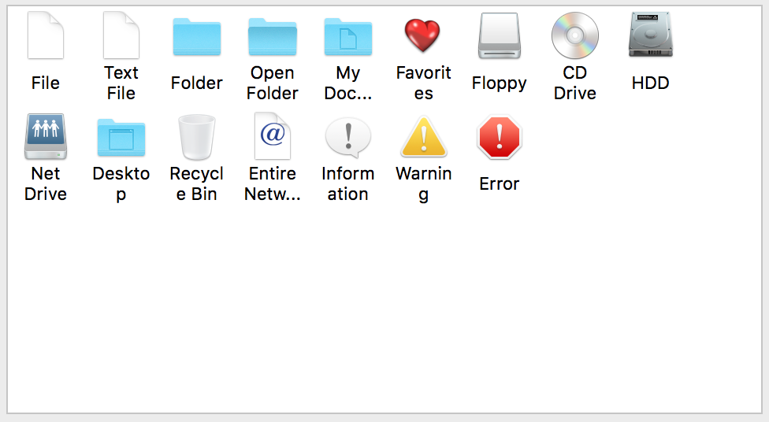
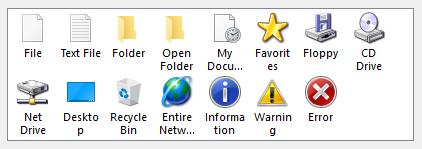
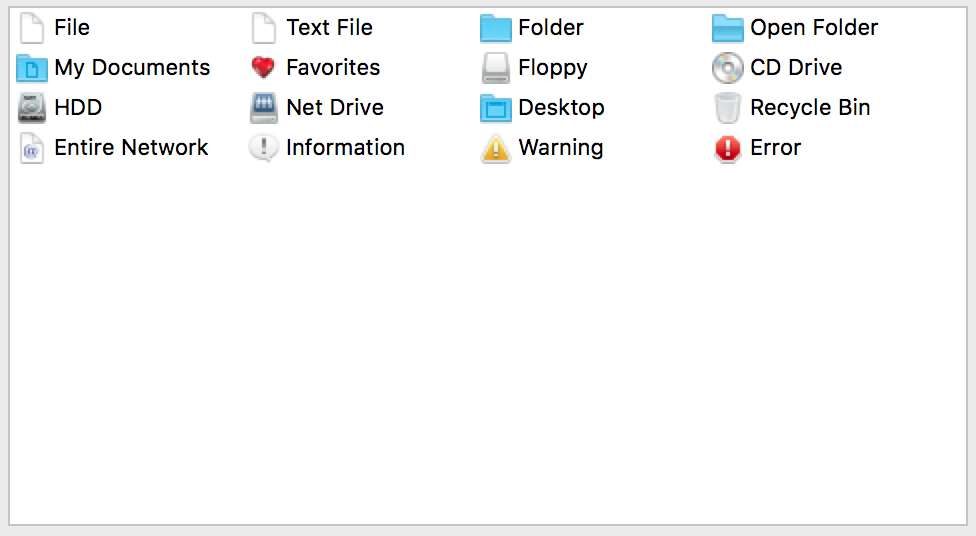
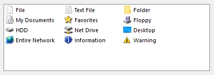
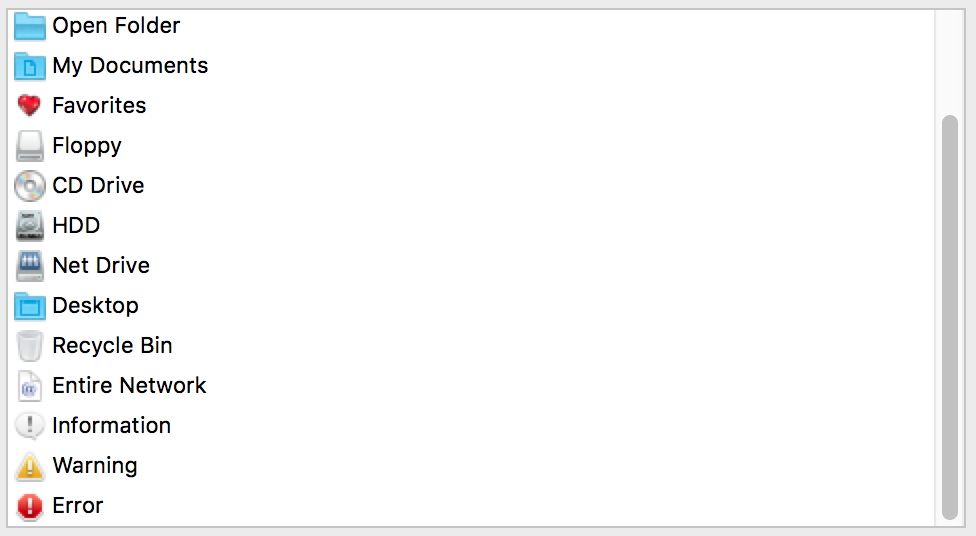
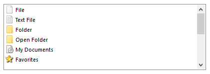

List View
A list view control is a window that displays a collection of items from which the user can choose one or more items. Each item consists of an image and an item text (label). List view controls provide several view modes, i.e. ways to arrange items and to display individual items.
List views can be single-selection (allowing only one item to be selected at a time) or multiple-selection (allowing one or more items to be selected at a time). By default a list view has no horizontal scrollbar, but it always has a vertical scrollbar. If the list view is not large enough to display all the list view items at once, the scroll bar becomes active, otherwise it is disabled. Using the NoScroll flag from resource it is possible to display the list view control without the default vertical scrollbar. The user scrolls the list when necessary, and selects or removes the selection from items. Selecting a list view item changes its visual appearance, usually by blending the image and changing the text and background colors to the colors specified by the operating system for selected items.
The multiple-selection list view control is not implemented yet.
Item types
- DG_ITM_LISTVIEW
Subtypes
-
Subtype Meaning DG_LVT_SINGLESELECT Only one selection is possible. DG_LVT_MULTISELECT Multiple-selection is possible.
View Modes
-
Value Meaning DG_LVVM_BOTTOMTEXT The item text is displayed below the image.


DG_LVVM_RIGHTTEXT The item text is displayed at the right side of the image.


DG_LVVM_SINGLECOLUMN The list is single-column: the image is aligned to the left, the item text area extends to the end of the row.


GRC Specification
SingleSelListView x y dx dy fontSpec imWidth imHeight cellWidth cellHeight lvModeFlag [NoScroll]
where x and y are the pixel coordinates of the upper left corner of the list view, dx and dy are the width and height of the control in pixels. fontSpec declares the font size and style of the item labels. cellWidth, cellHeight and imWidth, imHeight are the width and height of the list view items and item images in pixels, respectively. lvModeFlag defines the view mode of the list view control. By the optional NoScroll flag the list view control is created without the default vertical scrollbar.
Possible values of fontSpec:
-
Value DG constant combination used in DGSetItemFont ExtraSmall DG_IS_EXTRASMALL SmallPlain DG_IS_SMALL | DG_IS_PLAIN SmallBold DG_IS_SMALL | DG_IS_BOLD SmallItalic DG_IS_SMALL | DG_IS_ITALIC SmallUnderline DG_IS_SMALL | DG_IS_UNDERLINE LargePlain DG_IS_LARGE | DG_IS_PLAIN LargeBold DG_IS_LARGE | DG_IS_BOLD LargeItalic DG_IS_LARGE | DG_IS_ITALIC LargeUnderline DG_IS_LARGE | DG_IS_UNDERLINE
Possible values of lvModeFlag:
-
Value Meaning bottomText The DG_LVVM_BOTTOMTEXT view mode is set. rightText The DG_LVVM_RIGHTTEXT view mode is set. singleColumn The DG_LVVM_SINGLECOLUMN view mode is set.
Messages
-
Message Meaning DG_MSG_CHANGE The selection is changed in the list view. The message data parameter is always zero. DG_MSG_DOUBLECLICK A list view item is double clicked. The message data contains the 1-based index of the list view item. DG_MSG_FOCUS The list view gains or loses the keyboard focus. The message data is 1 or zero, respectively. DG_MSG_UPDATE The image of a list view item should be redrawn. DG sends this message to the dialog callback function only if the image type of the list view item is DG_LVIT_OWNERDRAW. The message data parameter of the message is a pointer to a DGListViewUpdateData structure that contains all the necessary information to draw the image by the application. DG_MSG_DRAGDROP Drag and drop related event occured. This message can come only after it is enabled with DGEnableMessage. List views can be both drag source and target.
Modification Flag
The DGListViewSelectItem and DGListViewDeselectItem functions set the list view's modification flag except if they are called when handling the DG_MSG_INIT message in the dialog callback function. The flag can also be set by user actions that change the selection in the list view and generate DG_MSG_CHANGE messages. Use DGModified or DGResetModified to retrieve or reset (clear) the state of the modification flag.
Remarks
Call DGListViewInsertItem to insert items into a list view control and DGListViewDeleteItem to delete them. The number of items currently in a list view can be retrieved by DGListViewGetItemCount.
The width and height of a list view item can be set and retrieved by DGListViewSetItemSize and DGListViewGetItemSize, respectively. The image rectangle cannot exceed this item rectangle. If the image is greater than the list view item, the image is clipped to fit in. To set and retrieve the image rectangle use DGListViewSetImageSize and DGListViewGetImageSize. A list view control can have up to three different view modes. The view mode can be set not only from the GRC, but also from the program code by the DGListViewSetViewMode function call. Use DGListViewGetViewMode to retrieve the current view mode.
There are two ways to define a list view item image:
- Assign images to the items individually by DGListViewSetItemImage, DGListViewSetItemImageId or DGListViewSetItemImageResource. These images can be of different types and sizes for each list view item. Use DGListViewGetItemImage, DGListViewGetItemImageId and DGListViewGetItemImageResource to retrieve this item specific image data, image ID and image resource module.
- Associate one image with the list view itself by DGListViewSetImage, DGListViewSetImageId or DGListViewSetImageResource, divide it into smaller sub-images of the same size by giving the number of rows and the total number of sub-images. Assign a sub-image to the list view item by DGListViewSetItemImageIndex. The image index parameter of the function is the simple 1-based row-by-row index of a sub-image. In this case the type of the item's image will be DG_LVIT_IMAGEINDEX. The image data, image ID and image resource module associated with the list view control can be retrieved by DGListViewGetImage, DGListViewGetImageId and DGListViewGetImageResource.
One possibility to specify the list view item image is to set it with its image handle by DGListViewSetItemImage or DGListViewSetImage, the other possibility is to set it with its resource ID by DGListViewSetItemImageId or DGListViewSetImageId. The image handle can be retrieved by DGListViewGetItemImage or DGListViewGetImage, the image resource ID can be retrieved by DGListViewGetItemImageId or DGListViewGetImageId and the resource module ID of the image can be retrieved by DGListViewGetItemImageResource or DGListViewGetImageResource.
DGListViewSetItemText and DGListViewGetItemText serve to set and retrieve the text of list view items. The text rectangle cannot be set, DG calculates its sizes from the item and image rectangles. With appropriate parameters multi-line item text can be achieved, too. The item text cannot contain end-of-line characters but DG can break the lines. If the text does not fit in the item rectangle, DG automatically truncates it with an ellipse ("...").
The text style, status and color of each list view item can be changed separately by DGListViewSetItemStyle, DGListViewSetItemStatus and DGListViewSetItemColor. To retrieve these list view item properties use DGListViewGetItemStyle, DGListViewGetItemStatus and DGListViewGetItemColor, respectively. Each list view item can have a user-defined value that can be used to store any item specific user data. DGListViewSetItemUserData and DGListViewGetItemUserData give an access to this value.
A list view control can be single-selection or multiple-selection. The user can select list view items by the mouse or by keypresses through the usual ways. To select or deselect one or more list view items from the program code call DGListViewSelectItem and DGListViewDeselectItem, respectively. Use DGListViewGetSelCount to retrieve the number of selected list view items and DGListViewGetSelected or DGListViewGetSelItems to get their indices. A mouse click on the empty client area of a list view (where there is no list view item) removes all the previous selections. In this case a DG_MSG_CHANGE message is sent to notify the application.
The parameters of a list view item can be set by calling list view specific functions. To avoid order-dependence of these function calls, DG checks consistency of the parameters only when drawing the list view item. This is why it is advised to enclose list view function calls by DGListViewDisableDraw and DGListViewEnableDraw if more items or parameters are modified. As DGListViewEnableDraw itself does not update the list view control, it is the application's responsibility to redraw the invalid areas by calling DGInvalidateItem or DGRedrawItem.
If the image type of a list view item is DG_LVIT_OWNERDRAW and this item should be redrawn, DG sends a DG_MSG_UPDATE message to the dialog callback function. The message data parameter of this message is a pointer to a DGListViewUpdateData structure that contains all the necessary information to draw the image by the application. The application should just draw the image; graying and blending are handled by DG after the dialog callback function returns. To set the owner draw flag of a list view item use the DGListViewSetItemOwnerDrawFlag function.
The list view is one of the focusable controls of DG. When a list view gains or loses the keyboard focus as a result of user actions, the dialog callback function receives a DG_MSG_FOCUS message. The keyboard focus can be set to a list view from program code, too, by DGSetFocus. To retrieve the control that currently has the keyboard focus use DGGetFocus.
The keyboard focus and the focusable control categories in DG essentially have the same meaning as in the Macintosh operating system (i.e. the same type of controls are focusable in DG and on Macintosh). On Windows, however, more controls can have keyboard focus. Focusable controls of DG form a subset of focusable controls of Windows. The DGSetFocus and DGGetFocus functions work on focusable controls of DG only.
The detailed help information of the item can be invoked by setting the keyboard focus to a focusable dialog item then pressing the [F1] key on Windows or [Help] key on Macintosh; or by clicking the right mouse button on the item; or by clicking the help [?] button in the dialog caption then clicking on the item itself. If tooltips are enabled, the short help information is displayed as usual. There are two ways to display help text for a list view. Help text can be displayed for each item of the list view or only one help text can be displayed for the list view. The help style of the list view can be set and retrieved by the DGListViewSetHelpStyle and DGListViewGetHelpStyle functions, respectively.
Requirements
- Version: DG 2.2.0 or later
- Header: DG.h
See Also
Dialog item types, List view specific functions, DGGetFocus, DGInvalidateItem, DGModified, DGRedrawItem, DGResetModified, DGSetFocus, DGSetItemFont, Callback functions
DG_MSG_CHANGE, DG_MSG_DOUBLECLICK, DG_MSG_FOCUS, DG_MSG_INIT, DG_MSG_UPDATE
DGListViewUpdateData